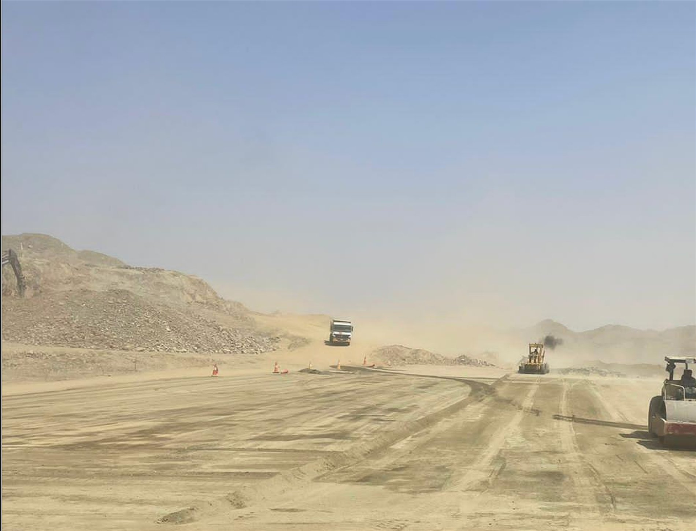
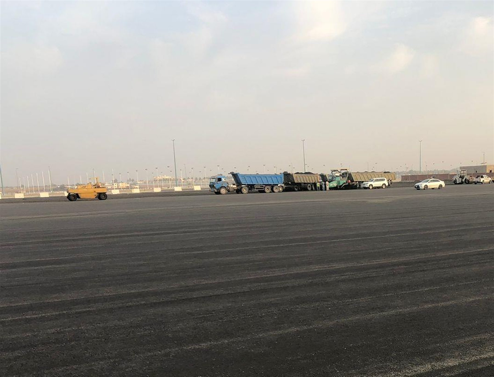

خدماتنا
قدرات متكاملة
للمشاريع الميدانية
من الدراسة والتخطيط إلى التنفيذ والتشغيل؛ نوحّد الخبرة والفرق والمعدات ضمن حل يناسب أهداف الموقع.
ما الذي نقدمه
شريك واحد عبر
دورة المشروع
نربط المعرفة الجيولوجية والمساحية بالتنفيذ الميداني والأسطول، ونبني نطاق الخدمة وفق المادة والكميات والبرنامج والإنتاج المطلوب.

التعدين وإدارة المحاجر
تخطيط وتشغيل الاستخراج والتحميل والنقل وإدارة واجهات العمل.
اكتشف الخدمة ←
المقاولات والأعمال المدنية
الحفر والردم والتسوية والطرق وتجهيز المواقع والبنية التحتية.
اكتشف الخدمة ←
الحفر والاستكشاف
حفر لبي ودوران عكسي ولب هوائي ومسح وتسجيل جيولوجي.
اكتشف الخدمة ←
قص الصخور
تجهيز الواجهات الصخرية والقطع والإزالة والتحميل والتسوية.
اكتشف الخدمة ←الدراسات الجيولوجية
الاستكشاف وتقييم الموارد والنمذجة ودعم خطط التعدين.
اكتشف الخدمة ←
الأعمال المساحية
رفع طبوغرافي وكميات ومناسيب ومراقبة التقدم والمحاذاة.
اكتشف الخدمة ←
تأجير المعدات الثقيلة
أسطول واسع مع التعبئة والدعم التشغيلي والصيانة الوقائية.
اكتشف الخدمة ←
التكسير والنقل وتوريد المواد
معالجة وتصنيف وتحميل ونقل المواد الخام والركام.
اكتشف الخدمة ←
السلامة والكفاءة
نخطط للعمل
قبل أن يبدأ
نراجع المخاطر ومسارات الحركة وتشكيلة المعدات ومؤشرات الأداء قبل التعبئة، ثم نتابع الإنتاج والجودة طوال التنفيذ.
منهجنا في الجودة ←